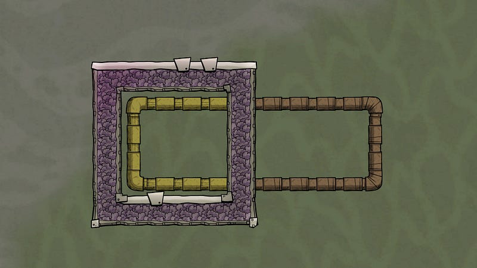
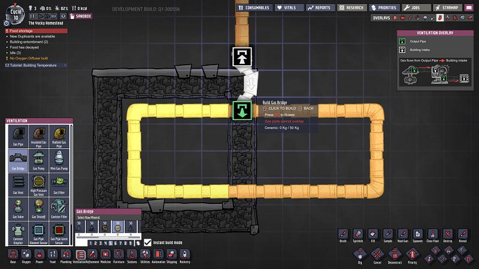
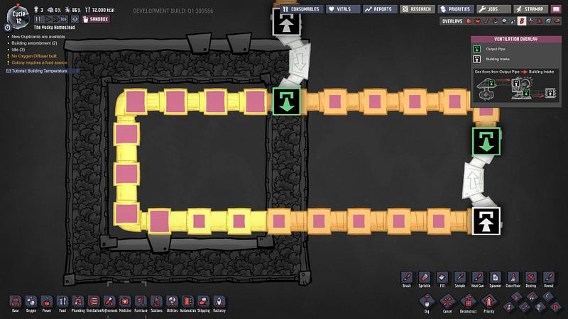
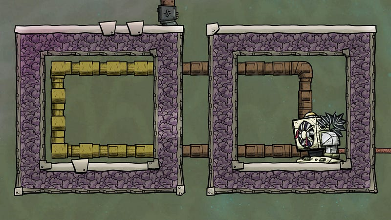
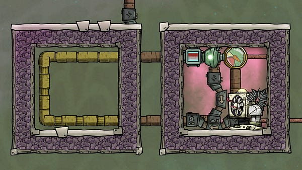
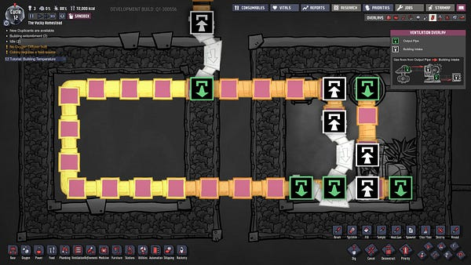
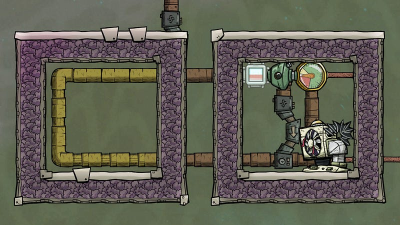
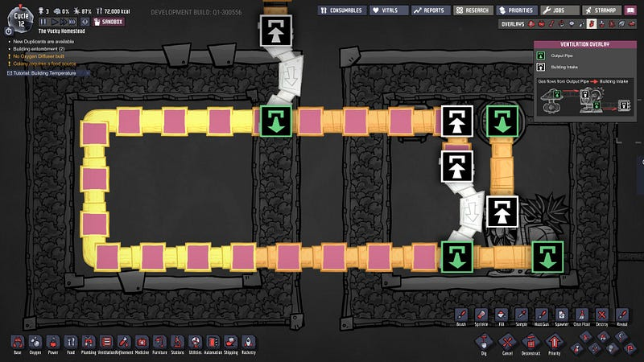
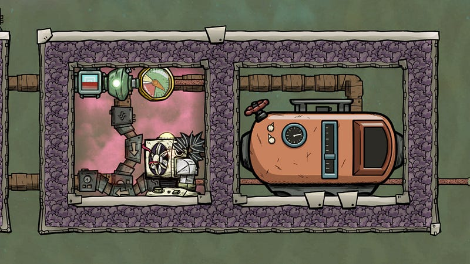
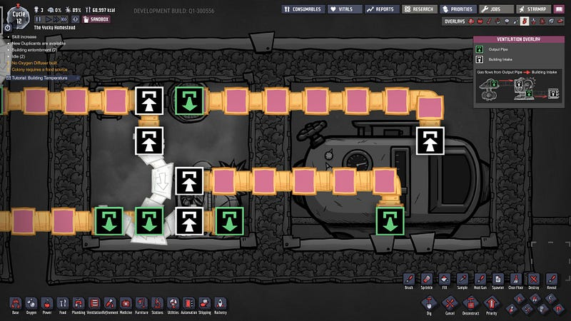

配管マスターへの道（ループ設計編）
配管マスターへの道（ループ設計編）
Oxygen Not Includedで熱を物体から物体へ移動させるには、気体ないし液体用配管をループ状にし、繰り返し同じ箇所を通すことによって配管内部の物質と、それが通っている環境との間で熱交換を行うのが一般的だ。今回はこのループの作り方について解説する。
「っていうか、ループって言うからには環状の配管をすればいいんでしょ？」というあなた、それはたしかに正しい。でもそれだけでは終わらないのだ。
今回は任意の部屋内の気体から熱を奪う際のループの設計について考えてみる。具体的には以下のThermo Regulator記事から、水素ループを使って酸素を冷やす部分のループについて考える。
これまでOxygen Not Included内で使いにくく感じてずっと使ってなかったThermo Regulatorの使い方がやっとわかったので解説するmedium.com
まずはもっとも基本的なところから。熱交換を行いたい部分は輻射パイプを熱伝導率の高い素材（例：金アマルガム）で作り、それ以外は逆に熱伝導率の低い素材（例：セラミック）で断熱パイプを作る。
これを環状に繋げると基本のループの完成。

これではもちろん、そもそも水素を入れる方法がない。お勧めはブリッジを使う事だ。これはなぜかと言えば、ブリッジはいきなり解体しても内容物が漏れないから。なので、充分に水素を行き渡らせたら、その後気軽に削除できる。

ちなみに以上のように環状にただループを作ってそこにブリッジを繋げても気体の行き場がないのでパイプに何も入らない。この辺の流れの作り方は別記事の「配管マスターへの道（水流設計編）」を参照してほしい。
水素を入れたらとりあえず何も意味のないループができる。

これだと輻射パイプで交換した熱をどこかに処理してるわけでもなく、意味がない。そこでThermo Regulator（日本語版では空調設備、以下TR）を繋げる。

これだけでも立派なループなのだが、冷却対象の加熱がTRの冷却より少ない場合、必要以上に冷却が進む。これでは電気がムダになるので、通常は「任意の温度n℃の水素を回す」という形で、n℃より温度が高い場合のみ水素をTRに通したい。
もっとも単純な方法はこうだろう。温度センサーで-20℃以上の水素を感知したら、ループ側に回さず、TRに回す。その結果をまたループに戻す。


ただ、よく結合部分を見てみて欲しい。この結合では、ループに空きがないとTR側からの冷却済み水素をループに戻せない。冷却された水素をループにまわしたいのだ！これでは本末転倒。
（ちなみに上記のようにブリッジを使わないと、緑の出口の両側に、白い入り口が存在したりして、水素がうまくループしない）
これを直すには単純にTR側からの流入を、ループからのブリッジより前にすればよい。この例ではブリッジだった部分を普通の配管に変えただけだが、手前にブリッジがあってもよい。とにかくTRからの流入がループからのブリッジより前に起こればよい。


このブリッジの配置順を間違えると全く逆になって、冷却されていない水素ばかりをループで回すことになるので注意。
さて、これで基本的なところはいいのだが、水素がループにパンパンに入っている場合、熱い水素を遮断機の先に逃がせない恐れがある。例えば、-20℃以上の水素を検知した際に遮断機の向こう側に余裕がなければそこで流れが止まってしまう。温度センサー部分の水素が-20℃以上になるまでこのまま止まってしまうのだ。
これが起こらないように充分な「遊び」が必要なわけだが、それには気体タンクを使う。もちろんタンクも含めてパンパンにしてしまったら同じ事なのだが、配管だけで遊びを調整するより、タンクをどん、っと置くほうがそのあたりの制御を適当にできるのでよい。


さらに、タンクにある程度水素を前持って蓄えておくと、タンクから出てくる水素の温度は、流入してきた水素の温度と元からタンクにあった水素の平均値になる。なので、例えば非常に熱い水素が入ってきても、少しは冷えた温度でTRに水素がまわってくるわけだ。
さらにタンクから出てくる水素は、タンク内に充分水素が入っていれば必ずパイプの最大出力で排出される。つまり、熱交換を行う際に必ずパイプ内がパンパンになっていて、とても効率がよい。
これでだいたい完成。
流れを軽くおさらい。
- まずループに水素を流す。輻射パイプを使い、熱交換をする
- ループ内の水素が-20℃以上になるとタンクに水素が行く。
- タンクからでてきた水素はTRへと流され、ここで14℃分冷却される。
- 冷却された水素はループ内にすでにある水素より優先される形でループ内へと戻される。
こうしてまとめると簡単に見えると思うが、マップの形や様々な物質の配置により、毎回こんなキレイな形の配管になるわけではない。その状況に合わせた配管をするにはちゃんと理解していないと本番では結構失敗しがちだ。
是非ループの作り方を覚えておいて、確実な熱交換をしよう！